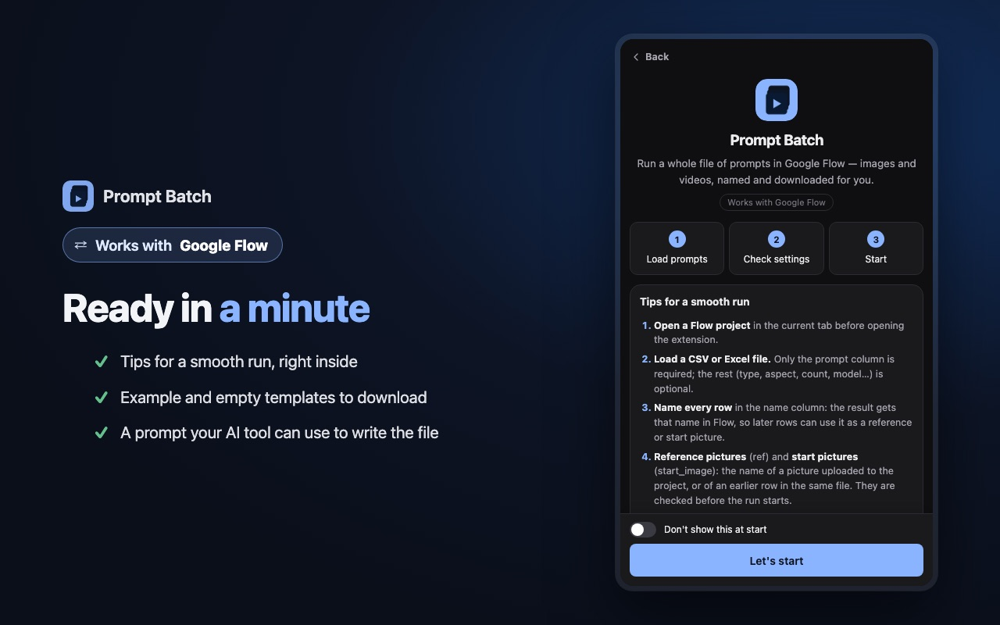
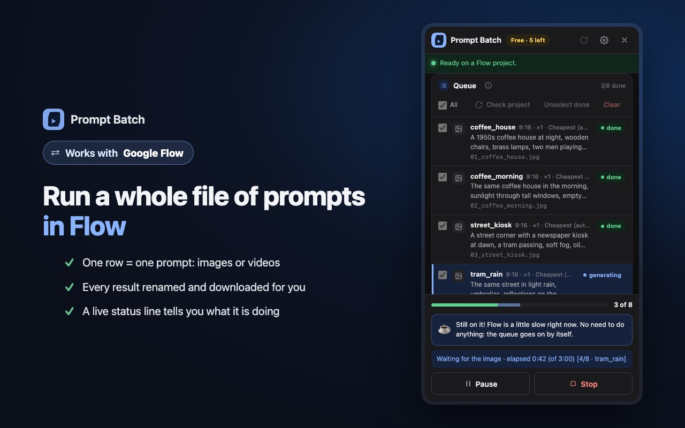
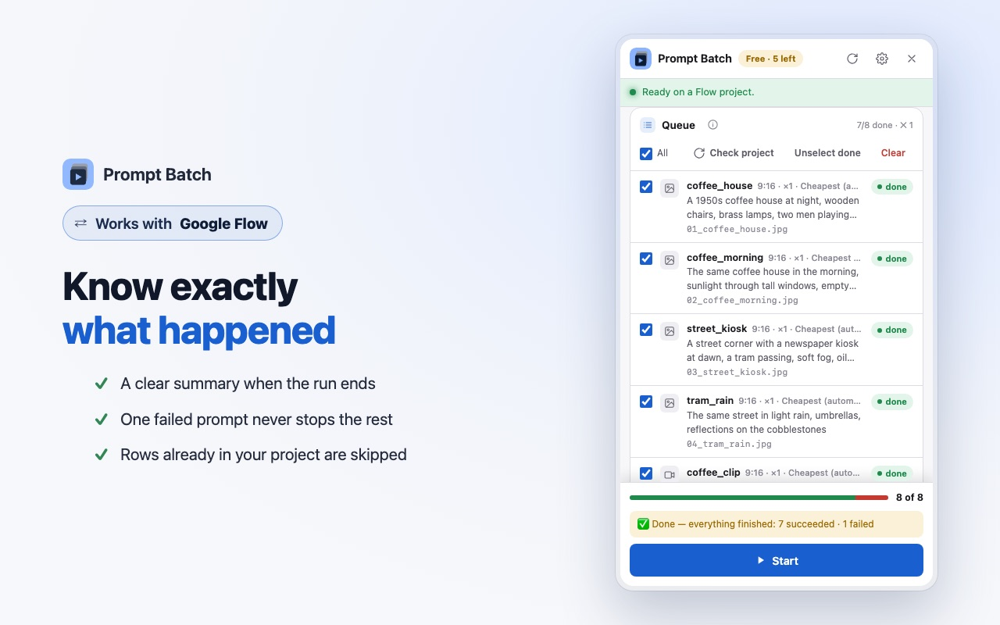

In short: Google Flow's prompt box sends one prompt at a time, and you wait for each result before typing the next. To run a whole list, put your prompts in a file (Excel, CSV or plain text) and let Prompt Batch, a Chrome extension, send them one by one in your own Flow project. It waits for each image or video, names it and downloads it for you.
This guide shows the whole run, from an empty spreadsheet to a folder of named files. Prompt Batch is free for your first 8 results, with every feature included, so you can try it on a small list first.
Before you start
- Chrome on a computer. Prompt Batch is a Chrome extension; it does not run on phones.
- A Google account that can use Flow. Prompt Batch works in your own account and uses your own Flow credits, exactly as if you typed each prompt yourself.
- Prompt Batch added to Chrome from the Chrome Web Store. Pin it so its icon stays in the toolbar.
- A Flow project open at flow.google.com. Any project works, even an empty one.
1. Prepare your file
Make a spreadsheet with a header row. Only the prompt column is required; every other column is optional, and the columns can be in any order.
| Column | What it does | Example |
|---|---|---|
prompt | The text sent to Flow (required). | A quiet harbour at dawn |
type | image or video. Empty = the panel's default. | image |
aspect | Shape of the result. | 16:9, 9:16, 1:1 |
count | How many results for this prompt (1 to 4). | 2 |
name | The file name, and the result's name inside Flow. | harbour |
ref | Pictures already in the project to use as a reference. | oil, gouache |
start_image | A picture to animate into a video (this row becomes a video). | harbour |
model | A Flow model for this row. Empty = the cheapest one. | |
resolution, duration | For videos. Empty = Flow's current setting. | 720p, 8 |
Here is a small file that makes two pictures, then turns the first one into a video:
prompt,type,aspect,name,start_image
"A quiet harbour at dawn, fishing boats, soft mist",image,16:9,harbour,
"The same harbour at night, lanterns on the boats",image,16:9,harbour_night,
"Slow push-in, gentle waves, mist drifting",,16:9,harbour_clip,harbourA plain text file works too: one prompt per line, and the panel's defaults decide the rest. You can also paste prompts straight into the panel. Each file can hold up to 50 prompts; for a longer list, split it into several files.
Don't want to start from zero? The panel has two ready templates (an empty one and a small test run) under the drop box.

2. Load it in Flow
- Open your Flow project.
- Click the Prompt Batch icon in Chrome's toolbar. The side panel opens next to Flow.
- Drop your file on the panel (or press it to choose the file).
Each prompt becomes a row in the queue. Above the Start button, the panel shows what the run will make: how many images and videos, and about how many credits. If a row's ref or start_image names a picture that is not in the project, the panel tells you before anything is made.

3. Check the settings
- Defaults: the type, shape and model used by rows that leave those columns empty. "Cheapest (automatic)" picks the Flow model that costs the fewest credits.
- Download: the folder inside your Downloads folder, and the size to save. More in Download every Flow result with clean names.
- Sending: the wait between prompts. It is at least 10 seconds and changes a little each time, so the run keeps a calm, human pace. A slower pace is gentler on your account; see Tips.
4. Press Start
Press Start. If the run includes videos, the panel asks you to confirm before it spends credits. Then Prompt Batch types each prompt into Flow, waits for the result, names it, downloads it and moves on.
- Keep the Flow tab open. It can stay in the background while you do other things.
- The status line shows what is happening now, for example waiting for the video, row 3 of 24.
- If one row fails, it is marked and the next one starts. One failure never stops the whole run.
- At the end you get a summary: how many succeeded, failed or were already in the project.
Chrome shows a bar saying Prompt Batch started debugging the browser. That is expected: it is how the extension presses keys in Flow, the same way you would.

5. Find your files
Every result lands in Downloads/Prompt Batch/<your file name>/ (the panel shows the exact path under Saved in:), numbered in the order of your file: 01_harbour.jpg, 02_harbour_night.jpg, 03_harbour_clip.mp4. When a prompt makes more than one result, they get _1, _2… at the end.
The first time, Chrome may ask to allow several downloads from flow.google.com. Allow it.
Tips for a smooth run
- Start small. Run 3 to 5 prompts first, check the results, then load the full list.
- Give rows a name. Named results are easy to find, and a later row can use them in
reforstart_image. Put pictures above the videos that animate them. - Let an AI tool write the file. In the panel, open ⚙ → Tips & templates → "Using AI to write your prompts?". Copy the ready prompt, add your idea, and save the answer as a .csv file.
- Respect Flow's limits. If Flow shows "We noticed some unusual activity", Prompt Batch stops before the next prompt. Wait about an hour before running again, and raise the wait between prompts. Never retry in a loop: your Google account matters more than one batch.
- Run it again safely. Rows whose result is already in the project are found and skipped, so a second run continues where the first stopped.
Questions
Can Google Flow run a list of prompts on its own?
Flow's prompt box takes one prompt at a time, so a list means sending them one by one. Prompt Batch does that sending for you, in your own project.
Does it use my Flow credits?
Yes. It works in your own Flow account, exactly as if you typed each prompt yourself. The panel shows the expected credits before the run starts.
Is it free?
Your first 8 results are free, with every feature. Pro removes that limit: see the prices.
Does it work with Flow in Arabic?
Yes. It works with Flow in English and in Arabic, and the panel itself has eight languages, Arabic included. Arabic column names work too.
Is Prompt Batch made by Google?
No. It is an independent tool by Mansify, not made, endorsed or supported by Google. You are responsible for following Google's terms when you use Flow.